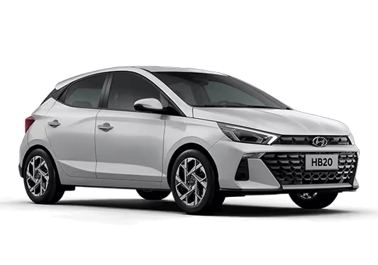

Carros mais vendidos no BRASIL
1. Chevrolet Onix

O Chevrolet Onix lidera as vendas no Brasil com seu design moderno, tecnologia e economia de combustível.
2. Hyundai HB20
O Hyundai HB20 conquistou o mercado brasileiro com seu design arrojado e completos itens de série.
3. Fiat Argo
O Fiat Argo se destaca pelo seu interior espaçoso e motor eficiente, sendo uma excelente opção urbana.
4. Ford Ka

O Ford Ka oferece dirigibilidade ágil e um conjunto mecânico que une desempenho e economia.
5. Volkswagen Gol

O Volkswagen Gol é um tradicional sucesso de vendas, conhecido por sua robustez e baixo custo de manutenção.
História dos Carros no Brasil
A indústria automobilística brasileira começou efetivamente na década de 1950, com a instalação das primeiras montadoras no país. O primeiro carro nacional foi o Romi-Isetta, em 1956, mas foi com a chegada da Volkswagen, Ford, General Motors e Fiat que o mercado se consolidou.
Na década de 1990, com a abertura do mercado, novas montadoras chegaram ao Brasil, como Honda, Toyota, Renault e Hyundai, aumentando a competitividade e a oferta de modelos. Hoje, o Brasil é um dos maiores mercados automotivos do mundo.
O setor automotivo brasileiro é caracterizado pela produção de veículos flex, que podem utilizar tanto etanol quanto gasolina, uma tecnologia pioneira no mundo desenvolvida pela engenharia brasileira.
Tabela FIPE
A Tabela FIPE (Fundação Instituto de Pesquisas Econômicas) é a referência para preços de veículos no Brasil. Ela é atualizada mensalmente e considerada o principal indicador para compra, venda e avaliação de veículos usados.
Os valores da Tabela FIPE são determinados através de pesquisas mensais realizadas com concessionárias e revendedoras em todo o país, considerando fatores como ano/modelo, marca, equipamentos e estado de conservação.
Consultar a Tabela FIPE é essencial para negociações justas no mercado de veículos, tanto para compradores quanto para vendedores.
Comparativo entre os Modelos
| Modelo | Preço Médio | Consumo (km/l) | Potência (cv) | Porta-Malas (L) |
|---|---|---|---|---|
| Chevrolet Onix | R$ 75.000 | 14,2 | 116 | 300 |
| Hyundai HB20 | R$ 78.500 | 13,8 | 120 | 295 |
| Fiat Argo | R$ 72.900 | 14,5 | 109 | 300 |
| Ford Ka | R$ 69.990 | 15,1 | 112 | 280 |
| Volkswagen Gol | R$ 68.800 | 13,9 | 106 | 285 |
Dicas para Compra e Manutenção
Antes de Comprar
Pesquise o histórico do veículo, verifique documentação e faça um test drive. Consulte a tabela FIPE para saber o preço justo.
Manutenção Preventiva
Faça revisões periódicas, troque óleo e filtros no prazo recomendado e sempre verifique pneus e freios.
Economia de Combustível
Mantenha os pneus calibrados, evite cargas desnecessárias e pratique uma direção suave para economizar combustível.
Fale Conosco
Tem dúvidas sobre carros ou sugestões para nosso site? Entre em contato!
Explicações Importantes sobre CSS
1. Três formas de estilização CSS
- Inline: Estilo aplicado diretamente no elemento via atributo
style="". Exemplo:<p style="color: red;">Texto</p> - Internal: Estilo escrito dentro da tag
<style>no<head>do documento HTML. - External: Estilo separado em arquivo
.cssexterno, importado via<link>.
2. Seletores CSS usados no projeto
- Tag: Seleciona elementos pelo nome da tag. Exemplo:
p {} - Classe: Seleciona elementos com determinada classe. Exemplo:
.destaque {} - ID: Seleciona elemento único pelo id. Exemplo:
#especial {} - Atributo: Seleciona elementos com determinado atributo. Exemplo:
img[alt] {} - Pseudo-classe: Estilos para estado do elemento. Exemplo:
nav ul li:hover {} - Pseudo-elemento: Seleciona parte do conteúdo do elemento. Exemplo:
p::first-line {}
3. Conflitos de CSS criados no projeto
- Conflito 1: Classe vs Inline style
Exemplo:<p class="conflito1" style="color: brown;">Texto</p>
Prioridade maior para o estilo inline (cor marrom) sobre a classe (.conflito1) que define roxo. - Conflito 2: ID vs Classe
Exemplo:<p id="conflito2" class="conflito2">Texto</p>
ID tem maior especificidade que classe, cor laranja do id prevalece sobre rosa da classe. - Conflito 3: Inline style vs ID
Exemplo:<p id="conflito3" style="font-size: 40px;">Texto</p>
Inline style tem prioridade maior que ID, tamanho fica 40px (inline) sobre 30px (ID).
4. Prioridade dos estilos CSS (especificidade)
- Inline style (atributo style) - maior prioridade.
- Seletores ID.
- Classes, pseudo-classes e atributos.
- Seletores de tag e pseudo-elementos.
- Quando empate, o último estilo declarado vence.
5. Exemplos de combinadores CSS usados
- Descendente (div p): Seleciona todo
pdentro dediv, em qualquer nível. - Filho direto (div > p): Seleciona
pque são filhos imediatos dediv. - Adjacente (h2 + p): Seleciona
pimediatamente apósh2. - Irmão geral (h2 ~ p): Seleciona todos
pque são irmãos (mesmo pai) apósh2.